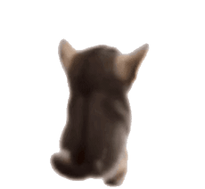

Class playlist
All the class videos
You can also check out the playlist with all the class videos below. Please note that the videos from this semester are uploaded under the channel Las Bananas Rusas.
Open the playlistGroup Project
Rebecca Oxford’s Language Learning Strategies, explained out loud with my group.
What I Learned
Making this video with my group was a completely different experience from just discussing theory in class. When we sat down to prepare our topic on Rebecca Oxford’s Language Learning Strategies and metacognitive strategies, we realized quickly that knowing a definition is not the same as explaining it out loud in a way that sounds natural and keeps people interested. Finding everyday examples and rehearsing our lines together pushed us to make sure we truly understood what we were talking about before hitting record.
Beyond the teamwork and the nerves of being in front of a camera, preparing this topic made me look at my own routine as an English learner. Talking about metacognitive awareness made me wonder how often I actually stop to ask myself if my study habits are working, or if I just keep doing things out of inertia. As a future teacher, this project also reminded me that students connect much better when complex concepts are translated into real, relatable situations rather than textbook definitions.
Watch It

Class playlist
You can also check out the playlist with all the class videos below. Please note that the videos from this semester are uploaded under the channel Las Bananas Rusas.
Open the playlist